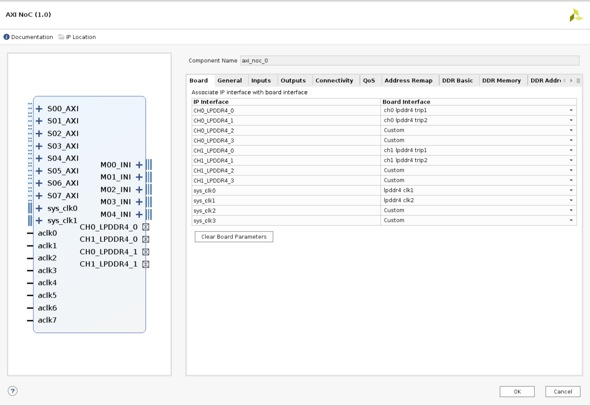
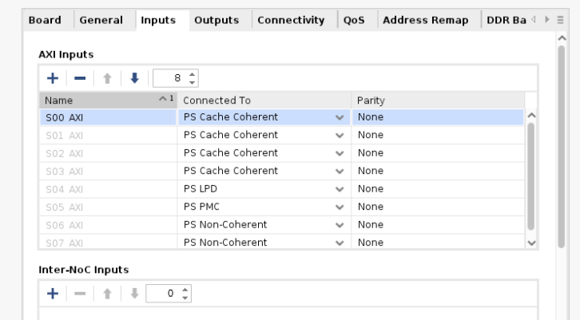
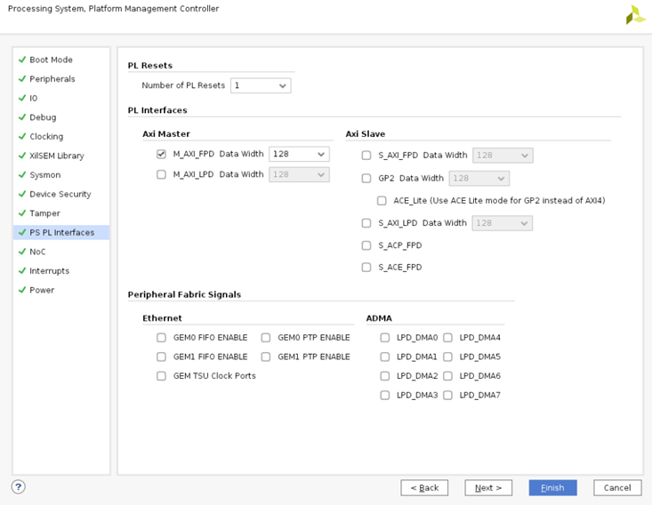
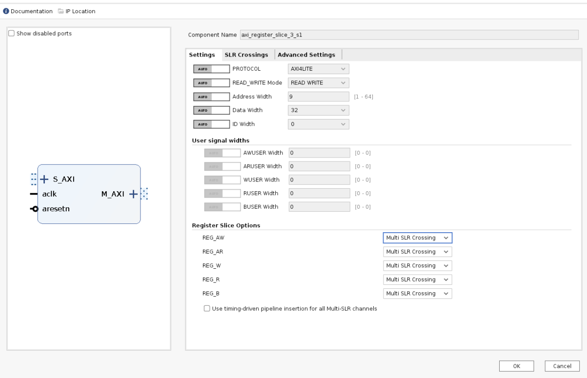
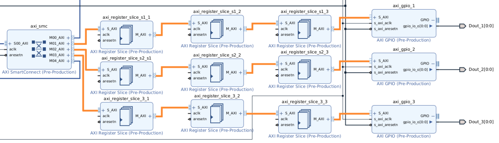
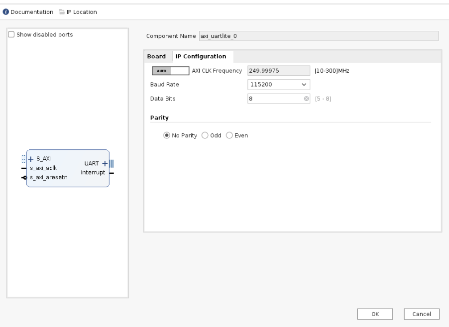
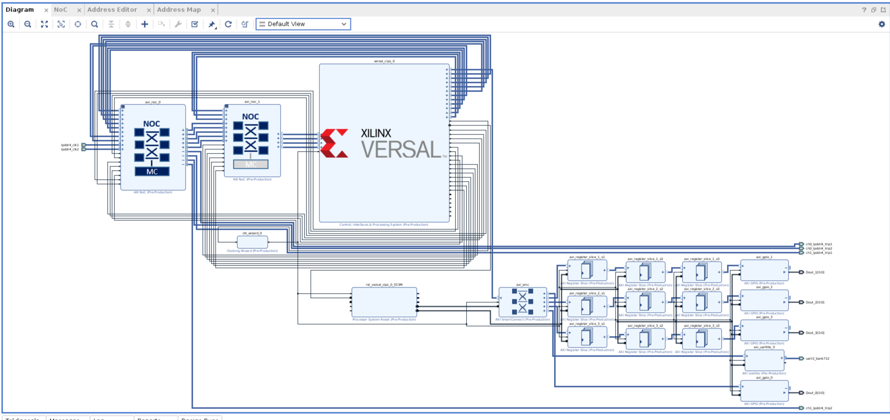
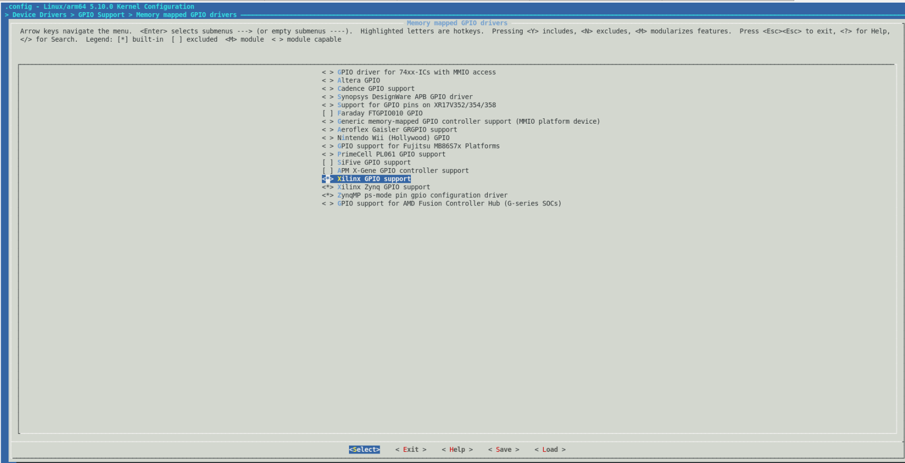

Versal スタックド シリコン インターコネクト デバイスのシステム デザイン例¶
この章では、スタックド シリコン インターコネクト (SSI) デバイスに使用可能なツールとサポートされているソフトウェア ブロックを使用して、Versal® デバイスをベースにしたシステムを構築する方法を説明します。Versal プレミアム VP1802 SSI デバイス ベースの VPK180 ボード用に、Vivado® ツールを使用して PL AXI GPIO および PL AXI UART を利用したエンベデッド デザインを作成する方法について説明します。SSI デバイスを使用したデザインについては、設計手法ガイド (UG949) を参照してください。また、ターゲットの Versal ACAP デバイス用の Arm® Cortex™-A72 コア ベースの Linux オペレーティング システムをコンフィギュレーションしてビルドする手順についても説明します。
デザイン例: AXI GPIO の使用¶
このデザイン例では、PL ベースの AXI GPIO インターフェイスを使用して、Linux アプリケーション (gpiotest) でボード上の LED を制御します。VP1802 SSI テクノロジ デバイスで使用可能な 4 つの SLR (Super Logic Regions) を利用するため、LED0、LED1、LED2、および LED3 用の PL AXI GPIO インターフェイス パスは、それぞれ SLR-0、SLR-1、SLR-2、および SLR-3 を経由して配線されています。
RPU ベアメタル アプリケーションは、PL ベースの AXI UART Lite を使用して、PS UART コンソールを使用する代わりに AXI UART コンソールにデバッグ メッセージを出力します。
このデザイン例では、次のように設定する手順を説明します。
SSI テクノロジ デバイス用 Versal® ACAP CIPS IP コアの設定。
SSI テクノロジ デバイスに必要な NoC (DDR) IP コアのコンフィギュレーションと関連する接続。
AXI GPIO および AXI UART PL IP と、PS および PL インターフェイスを介した CIPS への関連接続を設定します。
Versal ACAP CIPS IP コアの設定¶
Versal® ACAP CIPS IP コアを使用すると、ブート モード、ペリフェラル、クロック、インターフェイス、割り込み、などのプロセッシング システムおよび PMC ブロックを設定できます。
Vivado Design Suite での Versal ACAP CIPS IP コアの管理¶
新しいプロジェクトとブロック デザインを作成するには、「Versal ACAP CIPS および NoC (DDR) IP コアの設定」の手順に従ってください。
まずは、[Add IP] ボタンをクリックして IP カタログから IP を追加します。
検索ボックスに「CIPS」と入力して、[Control, Interfaces and Processing System] を探します。
[Control, Interface & Processing System IP] をダブルクリックして、ブロック デザインに追加します。次の図に示すように、[Diagram] ウィンドウに CIPS IP コアが表示されます。

[Run Block Automation] をクリックします。
ブロック設定を次の図に示すように設定します。

[Diagram] ウィンドウで versal_cips_0 をダブルクリックします。
[Design Flow] および [Presets] のすべての設定が次の図のようになっていることを確認します。
[Next] をクリックしてから [PS PMC] をクリックします。

次の図に示すように、TTC ペリフェラルをイネーブルにします。

IO コンフィギュレーション設定が次のようになっていることを確認してください。
[Interrupts] をクリックし、次の図のように設定します。

[Finish] をクリックして CIPS の GUI を閉じます。
NoC (および DDR) IP コアの設定¶
このセクションでは、前のセクションの前半で設定した CIPS と一緒に使用のに必要な NoC (および DDR) 設定と関連する接続について説明します。NoC IP コアを使用すると、NoC を設定し、DDR メモリ コントローラーをイネーブルにできます。
NoC および CIPS の設定¶
[CIPS] → [PS-PMC] を開きます。
[NoC] をクリックし、次の図のようにマスター SLR (SLR-0) の NoC コヒーレント、非コヒーレント インタフェースおよび NoC to PMC インターフェイスをイネーブルにします。
スレーブ SLR (SLR-1、SLR-2、SLR-3) に対して、次の図のように PMC to NoC および NoC to PMC の接続をイネーブルにします。


[Finish] をクリックして CIPS の GUI を閉じます。
[AXI NoC IP] を 2 つ IP カタログから追加します。
axi_noc-0 をダブルクリックします。[Board] タブで、次のように LPDDR トリプレットおよび関連するクロックをイネーブルにします。
[General] タブをクリックし、次のように [Number of AXI Slave interfaces]、[AXI Clocks] を 8 に、[Number of Inter-NoC Master Interfaces] を 5 に設定します。
[Inputs] タブで、8 つの AXI スレーブ インターフェイスを次のように設定します。
[Connectivity] タブを次のように設定します。
[OK] をクリックします。
axi_noc-1 をダブルクリックします。[General] タブで、次のように [Number of AXI Slave interfaces] を 3 に、[Number of AXI Master interfaces] を 4 に、[AXI Clocks] を 7 に、[Number of Inter-NoC Slave Interfaces] を 5 に設定します。

[Inputs] タブで PS PMC への 3 つの AXI スレーブ インターフェイスを次のように設定します。
[Outputs] タブで PS PMC への 4 つの AXI マスター インターフェイスを次のように設定します。
[Connectivity] タブを次のように設定します。
[OK] をクリックします。
次に示すように、[CIPS] と [NOC] との間を接続します。

PL AXI GPIO および AXI UART の設定¶
このセクションでは、AXI GPIO および AXI UART を備えた完全なシステムを構築するための PS および PL 設定と関連する接続について説明します。これには、Vivado IP カタログから必要な IP を追加し、PS サブシステムのブロックにコンポーネントを接続します。ハードウェアを設定する方法は、次のとおりです。
CIPS PS-PL インターフェイスの設定¶
PL IP に CIPS を接続するには、次の手順に従います。
Versal ACAP CIPS IP コアをダブルクリックします。
[PS-PMC] → [PS-PL Interfaces] をクリックします。
M_AXI_FPD インターフェイスをイネーブルにし、[Number of PL Resets] を 1 に設定します (図を参照)。
[Clocking] をクリックし、[Output Clocks] タブをクリックします。
[PMC Domain Clocks] を展開します。次に、[PL Fabric Clocks] を展開します。次の図のように、PL0_REF_CLK (PL CLK 0) を 300 MHz に設定します。

[Finish] をクリックしてから、[OK] をクリックし、設定を完了し、ブロック図に戻ります。
PL ハードウェアの設定¶
このデザイン例で使用されている PL IP を設定する手順は、次のとおりです。
ブロック図を右クリックし、[Add IP] をクリックして IP カタログから IP を追加します。
AXI GPIO を検索し、[AXI GPIO IP] をダブルクリックして、4 つの IP インスタンスをデザインに追加します。
IP カタログで AXI Uartlite を検索し、デザインに追加します。
[Block Design] ビューで [Run Connection Automation] をクリックします。

[Run Connection Automation] ダイアログ ボックスが開きます。
[Run Connection Automation] ダイアログ ボックスで、[All Automation] をオンにします。

これにより、AXI GPIO IP のすべてのポートの自動化がチェックされます。
axi_gpio_0の GPIO をクリックし、次に示すように [Select Board Part Interface] を [Custom] に設定します。axi_gpio_0の S_AXI をクリックします。次の図に示すように設定します。
axi_gpio_1、axi_gpio_2、axi_gpio_3に対しても手順 6 と 7 を繰り返します。axi_uartlite_0の S_AXI をクリックします。次の図に示すように設定します。
axi_uartlite_0の [UART] をクリックします。次の図に示すように設定します。

[OK] をクリックします。
これにより、次の接続が設定されます。
SmartConnect を CIPS と AXI GPIO IP 間のブリッジ IP として使用し、
S_AXI of AXI_GPIOと UART Lite を CIPS のM_AXI_FPDに接続します。プロセッサ システム リセット IP をイネーブルにします。
pl0_ref_clkをプロセッサ システム リセット、AXI GPIO、および SmartConnect IP クロックに接続します。SmartConnect および AXI GPIO のリセットをプロセッサ システム リセット IP の
peripheral_aresetnに接続します。
[Block Design] ビューで [Run Connection Automation] をクリックし、[All Automation] チェック ボックスをオンにします。
ext_reset_in をクリックして、次のように設定します。

これにより、プロセッサ システム リセット IP の ext_reset_in が CIPS の pl_resetn に接続されます。
[OK] をクリックします。
プロセッサ システム リセット IP の
peripheral_aresetnから SmartConnect IP の aresetn への接続を解除します。SmartConnect IP の aresetn をプロセッサ システム リセット IP の
interconnect_aresetnに接続します。

axi_gpio_0 IP をダブルクリックして開きます。
次の図のように [IP Configuration] タブを設定します。
axi_gpio_1、axi_gpio_2、axi_gpio_3も同じ設定にします。axi_gpio_0IP の外部ピンを削除し、インターフェイスを展開します。axi_gpio_0IP の出力を外部接続 (Make External) にします。axi_gpio_0IP の外部ポートを右クリックし、[External Port Properties] を選択し、Dout_0 に名前を変更します。
axi_gpio_1、axi_gpio_2、axi_gpio_3に対して手順 21 ～ 23 を繰り返し、それぞれ Dout_1、Dout_2、Dout_3 に名前を変更します。SLR-1、SLR-2、SLR-3 に配置する AXI Register Slice IP のインスタンスを 3 つ追加します。
Register Slice IP を右クリックし、[Block Properties] を選択して、次のように axi_register_slice_1_s2 という名前に変更します。

{kind=link}
{kind=link}
{kind=link}
{kind=link}
{kind=link}
{kind=link}
{kind=link}
{kind=link}
{kind=link}
{kind=link}
{kind=link}
{kind=link}
{kind=link}
AXI Register Slice IP をダブルクリックし、[Register Slice Option] を次のように [Light] に設定します。
{kind=link}
AXI Register Slice IP の 2 番目と 3 番目のインスタンスに対して手順 26 と 27 を繰り返し、それぞれ
axi_register_slice_2_s2とaxi_register_slice_3_s2に名前を変更します。
注記
axi_register_slice_1_s2、axi_register_slice_2_s2、axi_register_slice_3_s2 が、``pl_gpio_uart/constrs` フォルダーにパッケージの一部として提供される制約ファイルを使用して、SLR-1、SLR-2、SLR-3 にそれぞれ配置されます。
SLR-0 から SLR-1 への SLR クロッシング
注記
SLR クロッシング レジスタが追加され、タイミングクロージャが改善され、長いリソースの配線密集が緩和されています。
AXI Register Slice IP を 2 つ追加して、SLR-0 から SLR-1 への SLR クロッシングを処理します。
Register Slice IP を右クリックし、[Block Properties] を選択し、
axi_register_slice_1_s1に名前を変更します。Register Slice IP をダブルクリックし、[Register Slice Option] を [SLR Crossing] に設定します。
AXI Register Slice IP の 2 番目のインスタンスに対して、手順 30 と 31 を繰り返し、名前を
axi_register_slice_1_s3に変更します。
{kind=link}
SLR-0 から SLR-2 への SLR クロッシング
同様に、AXI Register Slice IP のインスタンスを 2 つ追加して、SLR-0 から SLR-2 へのマルチ SLR クロッシングを処理します。
Register Slice IP を右クリックし、[Block Properties] を選択し、
axi_register_slice_2_s1に名前を変更します。Register Slice IP をダブルクリックし、[Register Slice Option] を [Multi SLR Crossing] に設定します。

[SLR Crossing] タブを開き、次のように [Number of SLR Crossing] を 2 に設定します。

AXI Register Slice IP の 2 番目のインスタンスに対して、手順 34 ～ 36 を繰り返し、名前を
axi_register_slice_2_s3に変更します。
SLR-0 から SLR-3 への SLR クロッシング
同様に、SLR-0 から SLR-3 への SLR クロッシングを処理するために AXI Register Slice IP を 2 つ追加します。
Register Slice IP を右クリックし、[Block Properties] を選択し、
axi_register_slice_3_s1に名前を変更します。Register Slice IP をダブルクリックし、[Register Slice Option] を [Multi SLR Crossing] に設定します。
[SLR Crossing] タブを開き、次のように [Number of SLR Crossing] を 3 に設定します。
AXI Register Slice IP の 2 番目のインスタンスに対して、手順 39 ～ 41 を繰り返し、名前を
axi_register_slice_3_s3に変更します。AXI SmartConnect から axi_gpio_0、axi_gpio_1、axi_gpio_2、axi_gpio_3 の接続を解除し、次の図のようにレジスタ スライスを接続します。
[Block Design] ビューで [Run Connection Automation] をクリックします。すべてのレジスタ スライスの
aclkを選択し、[OK] をクリックします。
axi_uartlite_0 をダブルクリックして、IP を開きます。次の図のように [IP Configuration] タブを設定します。
Clock Wizard IP を追加します。これをダブルクリックして、IP を開きます。
[Clocking Features] タブに移動し、次のように設定します。
[Input Clock Information] の [Source] オプションが [Global buffer] に設定されていることを確認します。
[Output Clocks] タブに移動し、出力クロックを 250 MHz に設定します。

CIPS の
pl0_ref_clkを右クリックし、[Disconnect Pin] をクリックします。CIPS からの
pl0_ref_clkをクロッキング ウィザードの入力clk_in1に接続します。クロッキング ウィザードの出力を Processor System Reset IP の
slowest_sync_clockに接続します。これはタイミング エラーを避けるのに役立ちます。
{kind=link}
{kind=link}
{kind=link}
ブロック デザイン全体が次のようになります。
デザインの検証および出力の生成¶
デザインを検証し、出力ファイルを生成するには、次の手順を実行します。
[Block Design] ビューに戻り、ブロック デザインを保存します (Ctrl + S キーを押す)。
[Diagram] ウィンドウの空白部分を右クリックして、[Validate Design] をクリックします。または、F6 キーを押します。次の図のようなメッセージが表示されます。
Vivado ツールから、デザイン内の IP をアドレスにマッピングするように指示するプロンプトが表示されます。[Yes] をクリックします。

注記
アドレス セグメントの数は、デザイン内のメモリ マップド IP の数によって異なる場合があります。
検証が完了すると、次のようなメッセージ ダイアログ ボックスが開きます。

[OK] をクリックしてメッセージを閉じます。
[Sources] ウィンドウをクリックします。
制約を展開します。
[constrs_1] を右クリックし、[Add Sources] をクリックします。
[Add Sources] ウィンドウが表示されます。
[Add or Create Constraints] オプションを選択し、[Next] をクリックします。
追加する XDC ファイルを選択します。
注記
制約ファイルは
pl_gpio_uart/constrsフォルダーにパッケージの一部として含まれます。[Finish] をクリックします。
[Hierarchy] タブをクリックします。
[Sources] ウィンドウの [Design Sources] の下の [edt_versal_wrapper] を展開します。
edt_versal_i : edt_versal (
edt_versal.bd) という最上位ブロックを右クリックし、[Generate Output Products] をクリックします。
[Generate] をクリックします。
[Generate Output Products] の処理が完了したら、[OK] をクリックします。
[Sources] ウィンドウで [IP Sources] ビューをクリックします。次の図に示すように、生成した出力ファイルが表示されます。

デバイス イメージの合成、インプリメント、生成¶
デザインのデバイス イメージを生成するには、次の手順を実行します。
Flow Navigator の [Program and Debug] をクリックし、[Generate Device Image] をクリックし、[OK] をクリックします。
[No Implementation Results Available] メニューが表示されます。[Yes] をクリックします。
[Launch Run] メニューが表示されます。[OK] をクリックします。
デバイス イメージの生成が完了すると、[Device Image Generation Completed] ダイアログ ボックスが開きます。
[Cancel] をクリックしてウィンドウを閉じます。
デバイス イメージを生成したら、ハードウェアをエクスポートします。
注記
次の手順はオプションなので、省略して「ハードウェアのエクスポート」 セクションに進むこともできます。これらの手順を実行すると、デバイス イメージを生成する前に合成およびインプリメンテーションを実行するので、デバイス イメージ生成の詳細なフローがわかるようになります。デバイス イメージの生成フローを理解する必要がある場合は、次の手順を実行します。
Flow Navigator で [Synthesis] をクリックし、[Run Synthesis] をクリックします。

合成の開始前にプロジェクトを保存するようメッセージが表示された場合は、[Save] をクリックします。
合成の実行中、ウィンドウの右上にステータス バーが表示されます。このステータス バーは、デザイン プロセスをとおして、さまざまな理由により表示されます。ステータス バーは、プロセスがバックグランドで実行されていることを示します。合成が完了すると、[Synthesis Completed] ダイアログ ボックスが開きます。
[Run Implementation] をクリックして [OK] をクリックします。
インプリメンテーションが完了すると、[Implementation Completed] ダイアログ ボックスが開きます。
[Generate Device Image] をクリックして [OK] をクリックします。
デバイス イメージの生成が完了すると、[Device Image Generation Completed] ダイアログ ボックスが開きます。
[Cancel] をクリックしてウィンドウを閉じます。
デバイス イメージを生成したら、ハードウェアをエクスポートします。
ハードウェアのエクスポート¶
Vivado のメイン メニューから [File] → [Export] → [Export Hardware] をクリックします。[Export Hardware] ダイアログ ボックスが開きます。
[Include bitstream] を選択し、[Next] をクリックします。
エクスポートしたファイルの名前を入力し (またはデフォルトを使用し)、ディレクトリを選択します。[Next] をクリックします。
ハードウェア モジュールが既にエクスポートされている場合は、警告メッセージが表示されます。上書きメッセージが表示された場合、このデザインに別の名前を選択するか、または [Yes] をクリックして既存の XSA ファイルを上書きします。
[Finish] をクリックします。
サンプル プロジェクト: RPU を使用した FreeRTOS AXI UARTLiteアプリケーション プロジェクト¶
このセクションでは、Versal デバイス上で Arm Cortex-R5F コア ベースの RPU 用の FreeRTOS アプリケーションをコンフィギュレーションしてビルドする手順について説明します。
次の手順は、Arm Cortex-R5F から FreeRTOS アプリケーションを作成する手順を示しています:
Vitis™ IDE を起動し、
c:/edt/freertosなどの新しいワークスペースを作成します。[File] → [New] → [Application Project] をクリックします。[Create a New Application Project] ページが開きます。Vitis IDE を初めて起動した場合は、次の図に示す Welcome 画面で [Create Application Project] を選択できます。

注記
オプションで、[Skip welcome page next time] チェック ボックスをオンにすると、毎回 Welcome ページが表示されないようにすることもできます。
Vitis IDE には、ターゲット プラットフォーム、システム プロジェクト、ドメイン、テンプレートの 4 つのコンポーネントがあります。Vitis IDE で新しいアプリケーション プラットフォーム作成するには、次の手順に従います。
ターゲット プラットフォームには、ベース ハードウェア デザインと、宣言されたインターフェイスにアクセラレータを接続するのに使用されたメタデータが含まれます。プラットフォームを選択するか、Vivado Design Suite からエクスポートした XSA からプラットフォーム プロジェクトを作成します。
アプリケーション プロジェクトをシステム プロジェクトに配置し、プロセッサに関連付けます。
ドメインでは、ターゲット プラットフォームでホスト プログラムを実行するのに使用されるプロセッサおよびオペレーティング システムを定義します。
アプリケーションのテンプレートを選択して、開発を迅速に開始します。ウィザードの各ページで次の表の情報に基づいて設定を選択します。
表: ウィザード情報
ウィザード画面
システム プロパティ
設定または使用するコマンド
プラットフォーム
Create a new platform from hardware (XSA)
[Browse] をクリックして XSA ファイルを追加
プラットフォーム名
vpk180_platform
Application Project Detail
Application project name
freertos_gpio_test
Select a system project
+Create New
System project name
freertos_gpio_test_system
プロセッサ
versal_cips _0_pspmc_0_psv_cortexr5_0
Dom
Select a domain
+Create New
名前
デフォルト名入力済み
Display Name
デフォルト名入力済み
オペレーティング システム
freertos10_xilinx
プロセッサ
versal_cips _0_pspmc_0_psv_cortexr5_0
Templates
Available
Empty
Templates
Application (C)
Vitis ソフトウェア プラットフォームは、上記の手順を実行した後、Explorer ビューの下に、プラットフォーム プロジェクト (vpk180_platform) と freertos_gpio_test というアプリケーション プロジェクトを含むシステム プロジェクト (freertos_gpio_test_system) のボード サポート パッケージを作成します。
src/ ディレクトリの下のソース ファイルを削除し、freertos ソース コード ファイルを FreeRTOS プロジェクト パス
<design-package>/ch5_system_design_example_source__files/rpu/からsrc/ディレクトリへコピーします。Vitis IDE を設定して、FreeRTOS ボード サポート パッケージの下にある RPU アプリケーション デバッグ コンソールの AXI UARTLITE をイネーブルにします。
vpk180_platform プロジェクトの platform.spr に移動し、次にボード サポート パッケージの下の [Modify BSP] を選択し、図に示すように <Y> キーを押して stdin と stdout を axi_uarlite_0 に変更します。

[OK] をクリックして上記の設定を保存し、コンフィギュレーション ウィザードを終了します。
freertos_gpio_test_system を右クリックし、[Build Project] をクリックします。または、
 をクリックします。
をクリックします。Linux イメージをビルドし、FreeRTOS ELF をイメージに組み込む方法については、「サンプル プロジェクト: PetaLinux を使用した Linux イメージの作成」を参照してください。
PL AXI UART シリアル コンソールでは、RPU デバッグ ログは次のように出力されます。
Gpio Initialization started Counter 0 Counter 1 Counter 2 Counter 3 Counter 4 Counter 5
サンプル プロジェクト: PetaLinux を使用した Linux イメージの作成¶
このセクションでは、Versal デバイス上で Arm Cortex-A72 コア ベースの APU 用の Linux オペレーティング システムをコンフィギュレーションしてビルドする手順について説明します。PetaLinux ツールをボード固有の BSP と使用すると、Linux イメージをコンフィギュレーションおよびビルドできます。
このサンプル プロジェクトには、Linux ホスト マシンが必要です。PetaLinux ツールの依存関係とインストール手順については、『PetaLinux ツールの資料: リファレンス ガイド UG1144 を参照してください。
重要
この例では、VPK180 PetaLinux BSP を使用して PetaLinux プロジェクトを作成します。PetaLinux (VPK180) に該当する BSP がダウンロードされていることを確認します。
ボード |
QSPI/SD |
OSPI |
eMMC |
|---|---|---|---|
VPK180 量産ボード |
該当なし |
該当なし |
各ボードの PetaLinux BSP を現在のディレクトリにコピーします。
PetaLinux 環境を設定します。
$ source <petalinux-tools-path>/settings.csh
次のコマンドを使用して PetaLinux プロジェクトを作成します。
$ petalinux-create -t project -s xilinx-vpk180-vxxyy.z-final.bsp -n led_example
注記
VPK180 ボードの場合、コマンドの -s オプションの後に xilinx-vpk180-vxxyy.z-final.bsp を使用します。
次のコマンドを使用して、PetaLinux プロジェクト ディレクトリに移動します。
$cd led_example
ハードウェア プラットフォーム プロジェクトの XSA を Linux ホスト マシンにコピーします。
注記
VPK180 ボードの場合は、「デザイン例: AXI GPIO の使用」で生成した XSA ファイルを使用します。
次のコマンドを実行して BSP を再設定します。
$ petalinux-config --get-hw-description=<path till the directory containing the respective xsa file>
[PetaLinux Configuration] ウィンドウが開きます。この例では、このウィンドウで何も変更する必要はありません。
<Save> をクリックして上記の設定を保存し、<Exit> をクリックして、コンフィギュレーション ウィザードを終了します。
次のコマンドを使用して、PetaLinux プロジェクト内に gpiotest という名前の Linux アプリケーションを作成します。
$petalinux-create -t apps --template install --name gpiotest --enable
次のコマンドを使用して、
<design-package>/<vpk180>/linux/bootimagesからプロジェクトにアプリケーション ファイルをコピーします。$cp <design-package>/ch7_system_design_example_source__files/apu/gpiotest_app/gpiotest/files/* <plnxproj-root>/project-spec/meta-user/recipes-apps/gpiotest/files/ $cp <design-package>/ch7_system_design_example_source__files/apu/gpiotest_app/gpiotest/gpiotest.bb <plnx-proj-root>/project-spec/meta-user/recipes-apps/gpiotest/gpiotest.bb $cp <design-package>/ch7_system_design_example_source__files/apu/device_tree/system-user.dtsi <plnx-proj-root>/project-spec/meta-user/recipes-bsp/device-tree/files/system-user.dtsi
カーネル コンフィギュレーション内で GPIO サポートをイネーブルにします。
$petalinux-config -c kernel
注記
このコマンドは、PetaLinux プロジェクトのカーネル コンフィギュレーション ウィザードを開きます。
[Device drivers] → [GPIO Support] をクリックし、<Y> キーを押してイネーブルにします。Enter キーを押たあとに、<Y> キーを押して、Debug GPIO コールと
/sys/class/gpio/...(sysfs interface)のエントリをイネーブルにします。[Memory mapped GPIO drivers] まで移動し、<Y> キーを押して、Xilinx GPIO のサポートおよび Xilinx Zynq GPIO のサポートをイネーブルにします。
<Save> をクリックして上記の設定を保存し、<Exit> をクリックして、コンフィギュレーション ウィザードを終了します。
AIE、STDC++、および Tcl オプションをディスエーブルにし、ROOTFS のサイズを SD および OSPI/QSPI フラッシュ メモリのパーティションの両方に収まるように、ROOTFS を構成します。
petalinux-config -c rootfs
次の図のように、ユーザー パッケージに移動し、<Y> キーを押して aie-notebooks、openamp-demo-notebooks、packagegroup-petalinux-jupyter、pm-notebooks、python3-ipywidgets のサポートをディスエーブルにします。

次の図のように、[Filesystem Packages] → [misc] → [gcc-runtime] に移動し、<Y> キーを押して [libstdc++ support] をディスエーブルにします。

次の図のように、[Filesystem Packages] → [devel] → [tcltk] → [Tcl] に移動し、<Y> キーを押して [tcl support] をディスエーブルにします。

<Save> をクリックして上記の設定を保存し、<Exit> をクリックして、コンフィギュレーション ウィザードを終了します。
注記
VPK180 プロダクション ボードで動作するには、SD および QSPI ブート モードのみです。
次のコマンドを使用して、Linux イメージをビルドします。
$ petalinux-build
ビルドした画像をフラッシュ メモリに書き込むと、VPK180 ボード上のスレーブ SLR に接続された 4 つの LED がすべてオンになります。